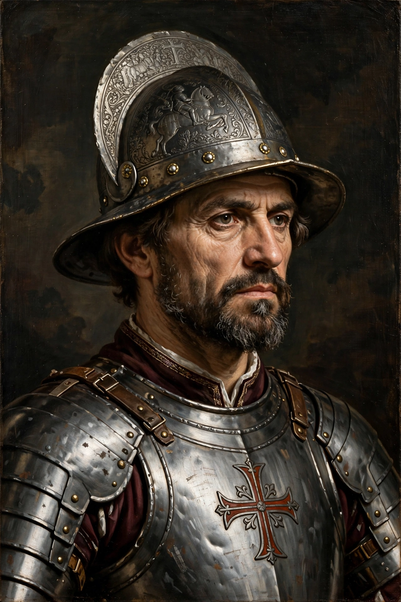

| Diego de Almagro | |
|---|---|
| Born | c. 1475, Almagro, Spain |
| Died | July 8, 1538 (executed), Cusco, Peru |
| Known for | Conquest of Peru; first European expedition to Chile |
| Partner | Francisco Pizarro (partnership, later civil war) |

Diego de Almagro (c. 1475 – July 8, 1538) was a Spanish conquistador, the partner of Francisco Pizarro in the conquest of the Inca Empire and the leader of the first Spanish expedition into Chile. His feud with the Pizarro brothers over the spoils of Peru — above all over possession of Cusco — ignited the first civil war among the Spanish conquerors, which ended with his defeat and execution.
Almagro was born illegitimate in the town whose name he took, arrived in the Indies in 1514, and settled in Panama, where he grew moderately prosperous as an encomendero. In 1524 he formed a partnership with Francisco Pizarro and the cleric Hernando de Luque to explore and conquer the rumored rich lands to the south: Pizarro commanded, Almagro handled logistics and recruitment, and Luque supplied funds. While Pizarro made the famous voyages of 1526–1528 and obtained the royal capitulation of 1529, Almagro — who lost an eye to an arrow in an early skirmish — felt cheated by terms that showered titles on Pizarro and left him a subordinate. He nevertheless brought reinforcements that reached Pizarro after the capture of Atahualpa at Cajamarca (1532), arriving too late to share in the king's ransom, a slight never forgotten.
Granted by Charles V a governorship (Nueva Toledo) south of Pizarro's province, Almagro set out in 1535 on an epic and disastrous expedition to Chile: some 500 Spaniards and thousands of indigenous auxiliaries crossed the Andes, where cold and starvation killed many, and traversed the Atacama before finding in Chile neither gold nor provisions. He returned to Peru in 1537 by the coastal desert route, emerging to seize Cusco, claiming it lay within his grant. Open war followed. After initial successes and a brief negotiated truce brokered — and then repudiated — Almagro was defeated by Hernando Pizarro at the Battle of Las Salinas (April 26, 1538), captured, tried for treason, and garroted in his cell in Cusco on July 8, 1538; his body was then publicly beheaded.
Almagro's mestizo son, Diego de Almagro II ("el Mozo"), became the figurehead of the Almagrist faction, whose men assassinated Francisco Pizarro in Lima in 1541. The Almagrists were crushed at the Battle of Chupas in 1542, and the younger Almagro was executed. In Chile, the city of Almagro and numerous places bear the elder Almagro's name, and Chilean tradition honors him as the country's Spanish "discoverer", despite the expedition's failure.